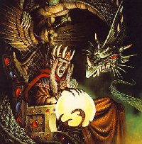

МЕСТНЫЙ ЖИТЕЛЬ
DEMIEN

| Раса: |
Dark Elf |
| Пол: |
Мужской
|
| Профессия: |
Necromancer |
| Align: |
Neutral-Evil |
| Клан: |
Invader |
| Религия: |
Eros, Gos of Love |
Он родился в шестой час,шестого дня, шестого месяца, неизвестно какого
года и день его рождения ознаменовался появлением новой звезды. Его
матерью была шакал, его отцом - ОН.
Он пришел в этот мир дабы подготовить его к приходу НЕГО, дабы не дать
свету одержать победу над его отцом и, когда над миром ляжет вечная
ночь, когда в душах существ, населяющих этот мир, останется только тьма и
все светлое канет в бездну, когда его Отец, освобожденный, взойдет на
трон этого мира, только тогда Антихрист посчитает свой долг выполненым.
А пока его задача одна - он убивает добро, он заставляет людей
ненавидеть, тем самым толкая их на путь зла, он ничего не прощает никому
и не дает пощады, он само ЗЛО, которое остановить невозможно.